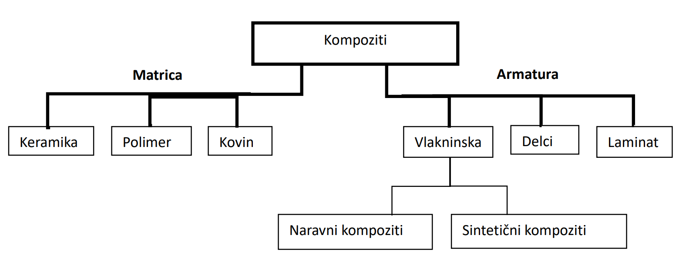

Po splošni definiciji jih opisujemo kot kombinacija materialov z različnimi lastnostmi. Ožja definicija pa zavzema le materiale pri katerih je vezivo oz. matrica keramika, kovina ali polimer, armatura(vstavljeni vložki, ki povečujejo nosilnost) pa materiali z visokimi moduli in trdnostjo. Armature lahko uporabljamo v različnih oblikah, kot so npr. kosmiči, vlakna, delci, itd., zato lahko kompozite razvrščamo po matricah ali armaturi.(Žigon,1996)
Najpogosteje uporabljene matrice so navadno duromeri, npr. epoksidne smole, nenasičeni poliestri ali fenolne smole, ter tudi nekateri plastomeri. S kombinacije dveh materialov - polimerne matrice in armature pridobimo nov material – kompozit, ki ima odlične mehanske lastnosti in odpornost proti različnimi zunanjimi vplivi(temperaturnim, kemijskim, abraziji,…), ter z daljšo obstojnostjo kot posamezne komponente kompozita.
Vloga polimerne matrice je, da poveže vlakna(navadno so 50-krat močnejša in 20-150-krat bolj toga kot matrice) med seboj, da zmorejo prenašati obremenitve, hkrati pa jih s tem tudi zavaruje pred raznimi zunanjimi vplivi.(Žigon,1996)
Za konstrukcijske kompozite se največ uporablja armature v obliki vlaken v različnih izvedbah(tkana, v snopu, posamična,..). Najpogosteje se za armaturo uporablja ogljikova, steklena in aramidna(izpeljanka iz aromatski poliamidi) vlakna, poleg teh pa se uporabljajo tudi poliakrilna, poliamidna, polietilenska itd. Med posameznimi vlakni poznamo tudi različne kvalitete npr.borosilikatno steklo, označeno s kvaliteto E, kar pomeni, da ima nizko električno prevodnost. Steklo z visoko trdnostjo, ki je dražje in manj pogosto uporabljeno pa je označeno s kvaliteto S. Pri ogljikovih vlaknih so najpomembnejša tista z oznako HS, kar pomeni high strength(visoka odpornost) in vlakna z oznako HM – high modulus, ki imajo visok modul elastičnosti.(Žigon,1996)
V primerjavi s klasičnimi inženirskimi materiali je glavna prednost polimernih kompozitov njihova nižja gostota v kombinaciji z visokimi moduli, odpornostmi in žilavosti, kar omogoča zmanjšanje mase izdelkov brez ogrožanja stabilnosti in odpornosti izdelka, česar se pogosto poslužujejo v letalski in vesoljski industriji. Potrebno pa je biti pozoren na dejstvo, da so osnovni tipi kompozitov anizotropni(več v zavihku Anizotropija).(Žigon,1996)